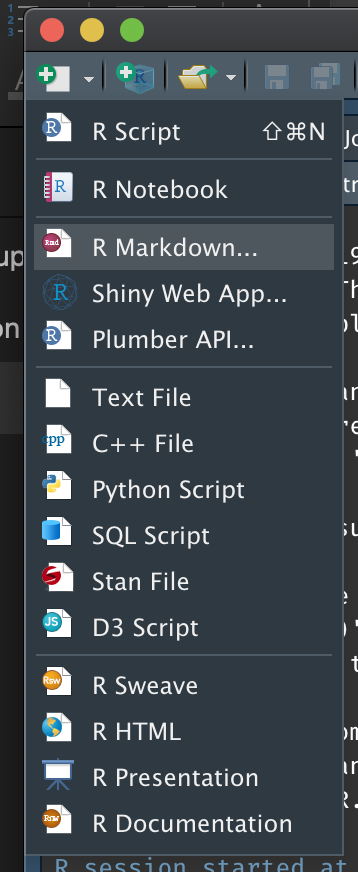
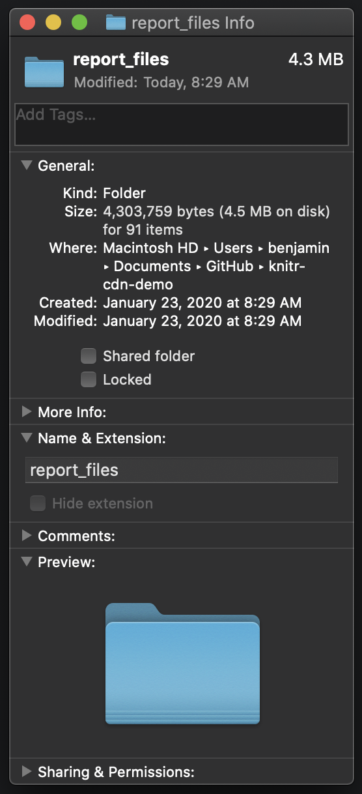
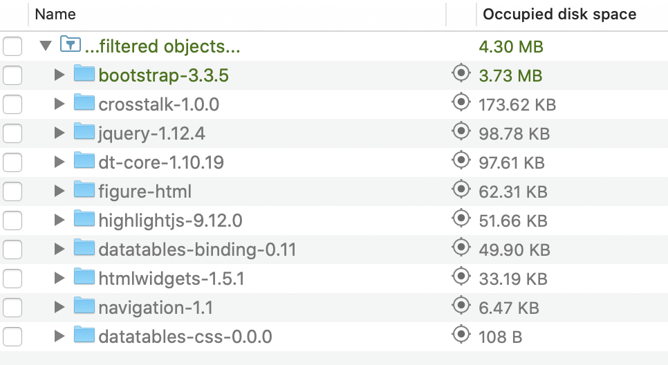
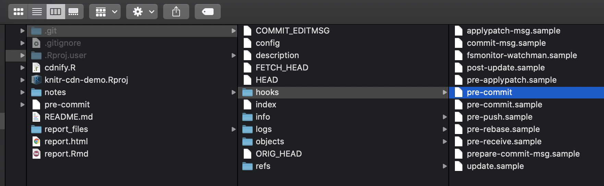
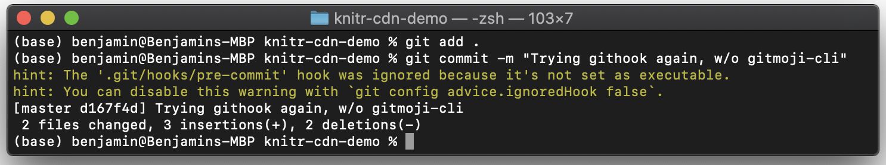

R Markdown: Shrink & Tidy Your HTML Output with CDNs
The Simplicity of Knitr’s HTML Output
Have you ever noticed that when you save a page from the internet, you get an HTML page plus an extra folder of supporting files?
For example, right-click on my website and click “Save As…,”
and this is what you get:

But when you when you render an R Markdown file as HTML, instead it comes out as a single HTML file, with no folder of supporting files?
If you haven’t noticed this difference, or you don’t know what I mean, we’ll walk through a minimal reproducible example below to better understand it.
This simplicity makes your output very easy to share with stakeholders. But it has its drawbacks, and we’ll use the same example later in the post to see those as well. Then we’ll spend time exploring ways around those drawbacks.
Since you might not be at your laptop to actually run this example,
you can also find it in a separate GitHub repository.
You can follow the repository commit by commit
as we explore knitr’s simplicity, the down sides of that simplicity,
and what can be done about those down sides.
To cut to the chase,
you can just look at my cdnify.R and pre-commit scripts there.
This upcoming section is covered by the third and fourth commits.
Example Setup
In RStudio, from the New File menu at the top left, choose R Markdown….

In the dialog box, feel free to add a title. Then select HTML and hit OK.
Save the new file (I called it Report.Rmd) and then “knit” it,
either using the knit button at top or by hitting Control+Shift_K
(Command+Shift+K on a Mac).
What you’ll get is a single file called something like report.html.
Open it up to see a beautiful HTML version of the Rmd file you started with.
This file is all you need to send to a stakeholder
for them to open and read your work.

The Costs of Simplicity: File Size & Transparency
Unfortunately, this simplicity comes with two costs.
File Size
The first cost is file size. If you look at your report itself, you’ll see that it’s quite small: less than 1kB.

But the HTML file is more than 700kB.

So what changed? It’s obviously not that HTML is 700x longer than markdown for the same text.
Two things changed:
- There’s now an embedded image (the plot).
- There are scripts and styling embedded in the file as well (JavaScript & CSS content).
We all know that images increase filesize. But it’s actually the scripts and styling that account for most of the difference:
| original filesize | if we take out the… | the new size is… | so it accounted for… |
|---|---|---|---|
| 713kB | image | 630kB | 83kB |
| 713kB | scripts + styling | 93kB | 620kB! |
Transparency
The second cost of putting everything in one easy-to-share HTML file is transparency.
To see this cost, let’s peel back the curtain a little on the HTML file. If you’re viewing the report in the RStudio viewer, go to the top left and click Open in Browser:
Then with the report open in your browser of choice, right-click on the report and click View Page Source:

As you browse the page source, just under the title you’ll see what’s called minified code.

Let’s talk through minified code for a moment.
Minified JavaScript & CSS
This small web page relies on a number of JavaScript and CSS libraries. One of them, the one depicted here, is a JS library called jQuery.
Usually, when code—in any language—relies on a library,
you simply refer to it at the top of the page with one line.
For example, if you have an R script that relies on the lubridate package,
you might include a line like this at the top of your script:
library(lubridate)Then throughout your script, R knows what to do
when you use functions from the lubridate package.
But for that line to work, whoever’s running your code
has to have lubridate installed on their computer.
So in the case of our HTML report—which uses jQuery
much like we might use lubridate—where would the library be installed?
To simplify all of that, and keep everything in one file, literally all of jQuery is included in report.html.
But libraries are big, of course; jQuery itself is 250kB. So we often use what’s called a minified version of the library. White space, new lines, and comments are stripped out, and variable names are as short as possible. It’s not meant to be readable; it’s meant to save filespace.
Images
Likewise, images are included within the text of the HTML document, encoded as text. To see this, scroll down in the source to where you’d expect to see the picture:

The picture is a png file, but it’s encoded as a long (83k characters!), otherwise meaningless string.
Practical Consequences: Diffing Files
All of this has consequences for your workflow, perhaps the biggest of which is that you can’t diff files.
If you don’t use git much for version control, or you don’t follow the terminology, diffing files just means comparing files (or contrasting them) to look for differences. Diffing files is good for answering questions like “What changed since the last time I ran this?” or “What have I accomplished since my last commit?” It’s what you see when you pull up a git UI to see what’s changed.
The problem is that most interfaces won’t diff large files automatically, and some won’t diff them at all. This is what GitHub Desktop shows when I try to diff the HTML we just created:

Of course you can click Show Diff. But even when you can diff the files, all the gobbledeegook—both minified code and text-encoded images—makes it harder to make sense of the changes.
Intermission!
In a moment we’ll walk through 3 tips to tidy up your HTML output and reduce your file size while keeping things easy to share.
But before we do that I’d like to make just one change to our report. (If you’re following along in GitHub, see this commit.) You can skip this section if you like. All we’re doing is making the dataset summary section a little prettier.
Adding the DT Library
Here’s what the dataset summary looks like right now:
It’s functional and informative in the aggregate, though a little plain. But let’s say our client wants to be able to browse the actual data, and let’s say they like things to look a little prettier.
For that we use the DT library, which takes just 3 lines of code.
First make sure you’ve installed it:
install.packages("DT")Then add a library call to the setup code chunk in your report:
```{r setup, include=FALSE}
knitr::opts_chunk$set(echo = TRUE)
library(DT) # add this line
```And finally change the cars code chunk from this—
```{r cars}
summary(cars)
```—to this:
```{r cars}
datatable(cars)
```And now the HTML is super pretty!

I include this example to show that with every change to pretty up your report, add widgets or improve the styling, you’re going to continue adding minified JS or CSS and increasing the filesize. In this case, we’re now up to 916 kilobytes, another increase of 203kB!

And now with that taken care of, we turn to the solution. As mentioned above we’ll walk through 3 steps:
| step (see below) | solves… |
|---|---|
| code externalization | transparency |
| content delivery networks (CDNs) | file size |
| file compression (.zip) | ease of use |
Externalizing Code
As we’ve seen, your HTML file includes entire libraries of JS & CSS code in it: code that bloats the file, code that won’t appreciably change from one version to the next, code that you couldn’t read even if you wanted to, because it’s minified.
So the first thing to do is to split that code out into its own JavaScript and CSS files. What’s left in the HTML file will then be actual content. It will be small enough to diff and meaningful to diff. And if the libraries change, you can track that separately.
Let’s get to it.
At the end of the YAML at the top of your file
is a line that tells knitr how to output results:
output: html_documentWe need to change that so that knitr no longer tries to keep everything
in the same document:
output:
html_document:
self_contained: falseWhen we do, and re-knit, the change is striking. Suddenly the HTML file is only 7kB (down 99%!):

It’s smaller because all the code has been moved to a separate folder,
a folder called report_files.
This folder is normal; it’s what you get when you save a page off the internet,
as we saw above.
Not only is the HTML file smaller, but the git diff is now a lot more readable. In the diff from this commit in GitHub, for example, each library file shows up separately, and you can identify each one by filename without looking at the contents:

And the HTML file itself is much more readable. I encourage you to check it out, either by viewing the source on own HTML file or checking my repo.
There is one significant downside, though.
While the files are cleaner, smaller, and easier to diff,
we’ve increased the overall filesize more than 4x.
The new report_files folder takes up 4.3 megs!

Where does this size come from?
In our case, 3.7 of those megabytes come from the Bootstrap library, which bills itself as “the most popular HTML, CSS, and JS library in the world.” Basically, it makes our content look pretty.

Now, filesize may not be an issue for you. If you host your files on a web server or shared file system, you might just send links. Sending links is usually the best way to share content anyway.
But if you have to send attachments, or if you send links but your shared space has storage restrictions, you’ll want to pare down.
Using Content Delivery Networks (CDNs)
Putting aside the filesize issue for just a moment, at this point you might have a question:
If Boostrap is the most popular HTML, CSS, and JS library in the world—obviously use by a lot of people—all these people can’t be hosting Bootstrap separately, can they? There’s got to be a way to point to a common location.
If you have that question (as I did), you would be right! And the way it’s done is called a Content Delivery Network, or CDN.
You can see it, for example, on Bootstrap’s site:

Bootstrap is providing URLs for common locations
where they host the library for everyone.
Developers can then point to these URLs at the top of their HTML code,
much like you’d include library(lubridate) at the top of an R script.
Getting Started with CDNs
Currently, your file does something similar, though not quite the same; it doesn’t use CDNs. It points to Bootstrap and other libraries at the top—
—but the library references are local,
pointing to files in the report_files folder.
What we want is to replace those references with CDNs.
Once we replace the local references, we can delete the local files. And then voilà! We’ve reduced the overall filesize.
So to preview the next few sections:
- First we’ll round up all the libraries we’re referencing, and see which ones have CDNs.
- Then we’ll swap the references and remove the local files.
- Then we’ll script those steps in R.
- Lastly we’ll automate the script and forget about it. Every time we check in changes, git will run the script automatically.
Rounding Up Libraries
First we round up the libraries our HTML file uses. Other HTML files may use different libraries, but this process should be the same, and is easy.
What are all the libraries we’re using? As we’ve seen, they’re listed near the top of the HTML page:
<script src="report_files/jquery-1.12.4/jquery.min.js"></script>
<link href="report_files/bootstrap-3.3.5/css/bootstrap.min.css" rel="stylesheet" />
<script src="report_files/bootstrap-3.3.5/js/bootstrap.min.js"></script>
<script src="report_files/bootstrap-3.3.5/shim/html5shiv.min.js"></script>
<script src="report_files/bootstrap-3.3.5/shim/respond.min.js"></script>
<script src="report_files/navigation-1.1/tabsets.js"></script>
<link href="report_files/highlightjs-9.12.0/default.css" rel="stylesheet" />
<script src="report_files/highlightjs-9.12.0/highlight.js"></script>
<script src="report_files/htmlwidgets-1.5.1/htmlwidgets.js"></script>
<link href="report_files/datatables-css-0.0.0/datatables-crosstalk.css" rel="stylesheet" />
<script src="report_files/datatables-binding-0.11/datatables.js"></script>
<link href="report_files/dt-core-1.10.19/css/jquery.dataTables.min.css" rel="stylesheet" />
<link href="report_files/dt-core-1.10.19/css/jquery.dataTables.extra.css" rel="stylesheet" />
<script src="report_files/dt-core-1.10.19/js/jquery.dataTables.min.js"></script>
<link href="report_files/crosstalk-1.0.0/css/crosstalk.css" rel="stylesheet" />
<script src="report_files/crosstalk-1.0.0/js/crosstalk.min.js"></script>Let’s notice a few patterns here:
- Each line is either a link (for a CSS file) or a script (for JavaScript).
- The part we want is in quotes after
href=(for links) orsrc=(for scripts). - Each reference starts with
report_files/, since that’s where the libraries are stored. - Each library is versioned, with numbers like
x.yorx.y.z. (This is called semantic versioning:xis the major version,ythe minor version, andzthe current patch.)
With those patterns in mind, let’s write this again:
| Simplified Filepath | Version |
|---|---|
| jquery-x.y.z/jquery.min.js | 1.12.4 |
| bootstrap-x.y.z/css/bootstrap.min.css | 3.3.5 |
| bootstrap-x.y.z/js/bootstrap.min.js | 3.3.5 |
| bootstrap-x.y.z/shim/html5shiv.min.js | 3.3.5 |
| bootstrap-x.y.z/shim/respond.min.js | 3.3.5 |
| navigation-x.y/tabsets.js | 1.1 |
| highlightjs-x.y.z/default.css | 9.12.0 |
| highlightjs-x.y.z/highlight.js | 9.12.0 |
| htmlwidgets-x.y.z/htmlwidgets.js | 1.5.1 |
| datatables-css-x.y.z/datatables-crosstalk.css | 0.0.0 |
| datatables-binding-x.y/datatables.js | 0.11 |
| dt-core-x.y.z/css/jquery.dataTables.min.css | 1.10.19 |
| dt-core-x.y.z/css/jquery.dataTables.extra.css | 1.10.19 |
| dt-core-x.y.z/js/jquery.dataTables.min.js | 1.10.19 |
| crosstalk-x.y.z/css/crosstalk.css | 1.0.0 |
| crosstalk-x.y.z/js/crosstalk.min.js | 1.0.0 |
Now I was able to find CDNs for the 9 green rows, simply by googling [name of library] [version] CDN for each one.

Here, in order, are the URLs I found. I tried to match the versioning, but if it was close I just used what I found.
| CDN | Version Googled | Version Found |
|---|---|---|
| https://code.jquery.com/jquery-1.12.4.min.js | 1.12.4 | 1.12.4 |
| https://maxcdn.bootstrapcdn.com/bootstrap/3.3.5/css/bootstrap.min.css | 3.3.5 | 3.3.5 |
| https://maxcdn.bootstrapcdn.com/bootstrap/3.3.5/js/bootstrap.min.js | 3.3.5 | 3.3.5 |
| https://oss.maxcdn.com/html5shiv/3.7.3/html5shiv.min.js | 3.3.5 | 3.7.3 |
| https://oss.maxcdn.com/respond/1.4.2/respond.min.js | 3.3.5 | 1.4.2 |
| https://cdn.jsdelivr.net/gh/highlightjs/cdn-release@9.18.0/build/styles/default.min.css | 9.12.0 | 9.18.0 |
| https://cdn.jsdelivr.net/gh/highlightjs/cdn-release@9.18.0/build/highlight.min.js | 9.12.0 | 9.18.0 |
| https://cdn.datatables.net/1.10.20/css/jquery.dataTables.min.css | 1.10.19 | 1.10.20 |
| https://cdn.datatables.net/1.10.20/js/jquery.dataTables.min.js | 1.10.19 | 1.10.20 |
Removing Local Files
To be clear, the next step is very straightforward. We simply replace strings that look like this—
report_files/bootstrap-3.3.5/css/bootstrap.min.css—with ones that look like this:
https://maxcdn.bootstrapcdn.com/bootstrap/3.3.5/css/bootstrap.min.cssThen, since the file report_files/bootstrap-3.3.5/css/bootstrap.min.css
is no longer needed (for example), we can delete it.
We’ll follow these steps manually once through before scripting them.
Manual Steps
Start by opening report.html in a text editor:

In the text editor, delete everything from report_files/ to
bootstrap.min.css—

—and for just a moment, try leaving it as a blank string. This is a great chance to see what Bootstrap actually does.
Remember what the report looked like before you deleted that href:

If you save the report right now, and open it in Chrome, instead it looks like this:
Now that you’ve seen what you’re missing without bootstrap,
copy-paste in the URL of the CDN—
—and save and open in Chrome again. Everything’s back to normal! The CDN worked.
And since the CDN worked, we can delete the file
report_files/bootstrap-3.3.5/css/bootstrap.min.css.

You can even refresh the page in Chrome now, and you’ll see it still works without the local file.
So now, since that worked, it’s time to take care of the rest of the references! In cooking-show style, I’ll simply pull the completed pie from the oven and show you what it looks like.
This is the section right under the title in the HTML file. You can just copy-paste them into your file if you don’t want to go line by line.
<script src="https://code.jquery.com/jquery-1.12.4.min.js"></script>
<meta name="viewport" content="width=device-width, initial-scale=1" />
<link href="https://maxcdn.bootstrapcdn.com/bootstrap/3.3.5/css/bootstrap.min.css" rel="stylesheet" />
<script src="https://maxcdn.bootstrapcdn.com/bootstrap/3.3.5/js/bootstrap.min.js"></script>
<script src="https://oss.maxcdn.com/html5shiv/3.7.3/html5shiv.min.js"></script>
<script src="https://oss.maxcdn.com/respond/1.4.2/respond.min.js"></script>
<script src="report_files/navigation-1.1/tabsets.js"></script>
<link href="https://cdn.jsdelivr.net/gh/highlightjs/cdn-release@9.18.0/build/styles/default.min.css" rel="stylesheet" />
<script src="https://cdn.jsdelivr.net/gh/highlightjs/cdn-release@9.18.0/build/highlight.min.js"></script>
<script src="report_files/htmlwidgets-1.5.1/htmlwidgets.js"></script>
<link href="report_files/datatables-css-0.0.0/datatables-crosstalk.css" rel="stylesheet" />
<script src="report_files/datatables-binding-0.11/datatables.js"></script>
<link href="https://cdn.datatables.net/1.10.20/css/jquery.dataTables.min.css" rel="stylesheet" />
<link href="report_files/dt-core-1.10.19/css/jquery.dataTables.extra.css" rel="stylesheet" />
<script src="https://cdn.datatables.net/1.10.20/js/jquery.dataTables.min.js"></script>
<link href="report_files/crosstalk-1.0.0/css/crosstalk.css" rel="stylesheet" />
<script src="report_files/crosstalk-1.0.0/js/crosstalk.min.js"></script>Pruning More Aggressively
Now, in the previous section after we deleted bootstrap.min.css,
we only deleted that one file.
But Bootstrap includes a lot of files.
Even just the css folder has at least 40!

But we don’t have to be that surgical. The local Bootstrap library isn’t referred to at all anymore, so we can delete the whole folder.
In fact, at this point there are just 7 local references left in report_files:
navigation-1.1/tabsets.jshtmlwidgets-1.5.1/htmlwidgets.jsdatatables-css-0.0.0/datatables-crosstalk.cssdatatables-binding-0.11/datatables.jsdt-core-1.10.19/css/jquery.dataTables.extra.csscrosstalk-1.0.0/css/crosstalk.csscrosstalk-1.0.0/js/crosstalk.min.js
Why not just keep those files and delete the rest?
For example, simply consolidate these files to a temp directory,
delete the rest,

and then move the important files back.

One more thing to note!
In these last screenshots, I also held onto the folder figure-html;
that’s where our plot lives!
Just remember that whatever script we write
will have to solve for figure-html as well.
Pause: What We’ve Accomplished
Before moving on, let’s take a moment to celebrate our successes. First, if you open your HTML file in Chrome, you’ll see that everything works. We truly no longer needed the local files!
Second, the report_files folder is now only 435kB:
90% smaller than the earlier report_files folder,
and less than half the size of the HTML file we started with.

Zip Your Files
In a moment we’ll script and automate what we just did. But in the end, this method still leaves you with a folder of files to share. That’s a minor frustration in email-heavy settings.
The simple fix is to compress both the report and the report files into a single zip folder.

In this case, the final zipped size was a meager 80 kilobytes: less than a tenth the size of the HTML file we started with!

You may still use R in a context where stakeholders either can‚Äôt or won‚Äôt open a zip file to click through on the single HTML file inside it. Unfortunately, I don‚Äôt have a solution for that. ü§∑
Have a Script Do the Work
Now comes the time when we ask ourselves:
This seems pretty straightforward. Do you think we can do it in a script?
And the answer is, of course we can! This is R. There’s got to be a way to do it.
To slow things down, I’m going to write it piece by piece. If you’re impatient and want to skip to the end, go for it!
Swapping in CDNs
First we’ll do some setup work that should be fairly self-explanatory.
For this next section, if you’re not familiar with the here package,
I recommend Jenny Bryan’s ode,
“I love the here package. Here’s why.”
Or just set html_file to wherever report.html lives—e.g.
/Users/benjamin/report.html—but
without the .html file extension.
library(tidyverse)
library(here)
# make a tibble of references to be replaced
references <- tibble(
local_file = c(
"jquery-1.12.4/jquery.min.js",
"bootstrap-3.3.5/css/bootstrap.min.css",
"bootstrap-3.3.5/js/bootstrap.min.js",
"bootstrap-3.3.5/shim/html5shiv.min.js",
"bootstrap-3.3.5/shim/respond.min.js",
"highlightjs-9.12.0/default.css",
"highlightjs-9.12.0/highlight.js",
"dt-core-1.10.19/css/jquery.dataTables.min.css",
"dt-core-1.10.19/js/jquery.dataTables.min.js"
),
cdn_url = c(
"https://code.jquery.com/jquery-1.12.4.min.js",
"https://maxcdn.bootstrapcdn.com/bootstrap/3.3.5/css/bootstrap.min.css",
"https://maxcdn.bootstrapcdn.com/bootstrap/3.3.5/js/bootstrap.min.js",
"https://oss.maxcdn.com/html5shiv/3.7.3/html5shiv.min.js",
"https://oss.maxcdn.com/respond/1.4.2/respond.min.js",
"https://cdn.jsdelivr.net/gh/highlightjs/cdn-release@9.18.0/build/styles/default.min.css",
"https://cdn.jsdelivr.net/gh/highlightjs/cdn-release@9.18.0/build/highlight.min.js",
"https://cdn.datatables.net/1.10.20/css/jquery.dataTables.min.css",
"https://cdn.datatables.net/1.10.20/js/jquery.dataTables.min.js"
)
)
# set the filepath information
html_file <- here("report") # filepath without the extension
fullpath <- paste0(html_file, ".html") # actual name of HTML file
dir_path <- paste0(html_file, "_files") # directory of local libraries
# also just the name of the directory will come in handy
dependency_dir <- "report_files"
# grab the page contents
page_contents <- read_lines(fullpath)Now let’s make the replacements. Here purrr::reduce2 is the workhorse; you’ll see a deeper explanation below.
# the actual strings we're replacing always start with report_files/
references <-
mutate(
references,
local_file = paste(dependency_dir, local_file, sep = "/")
)
page_contents <-
reduce2(
.x = references$local_file,
.y = references$cdn_url,
.f = str_replace,
.init = page_contents
)
write_lines(page_contents, fullpath)purrr::reduce2 runs through our replacements iteratively, as if we’d written it like this:
page_contents <-
page_contents %>%
str_replace(references$local_file[1], references$cdn_url[1]) %>%
str_replace(references$local_file[2], references$cdn_url[2]) %>%
str_replace(references$local_file[3], references$cdn_url[3]) %>%
str_replace(references$local_file[4], references$cdn_url[4]) %>% …and so on down the line.
And we use write_lines from the readr package (loaded with the tidyverse)
to write the contents back to the HTML file.
Listing Files to Delete
Now that we’ve swapped local references for CDNs, we can go about deleting files.
As described above, we’ll do that by first deciding which files to keep, and then deleting the rest.
To decide which files to keep,
we’ll loop through the contents of the file
and capture any remaining references with the regular expression
report_files/([^\"]+):
- the string
report_files/, - followed by anything but quotes
[^\"], - one or more times
+. - We use a capture group
()to get just the part afterreport_files/.
get_remaining <- function(page_contents) {
pattern <- paste0(dependency_dir, "/([^\"]+)") # pattern to watch for
remaining_lines <- str_which(page_contents, pattern) # what lines have it?
if (!length(remaining_lines)) return(NA_character_) # none? return NA.
str_match(page_contents[remaining_lines], pattern)[, 2] # return matches
}For more on regular expressions see the stringr documentation, especially the page on str_match. Or see https://www.regular-expressions.info/ for a full tutorial.
Deleting Files
To actually delete the files we’ll use the fs package. It has intuitively named, vectorized functions like
- path to construct filepaths,
- dir_ls to list the files in a directory, and
- file_delete to delete files.
library(fs)
# keep the files still explicitly named in the HTML
keep_these <-
path(dir_path, get_remaining(page_contents))
# remove everything else in the report_files folder
remove_these <-
setdiff(
dir_ls(dir_path, recurse = TRUE, type = "file"),
keep_these
)
file_delete(remove_these)Looping through Multiple Reports
Now let’s say we have more than one HTML file—not just report.html.
Let’s say they’re all in the same folder (or subfolders of it).
Can we handle the whole folder at once?
Sure we can! We wrap the code above in a function, and run that function for all the reports.
This will be particularly useful when we get to automating the script. If the folder we use is a git repository, for example, we can tell git to tidy up and shrink all its HTML files before every commit.
Let’s call the function we create cdnify:
library(tidyverse)
library(here)
library(fs)
# make a tibble of references to be replaced
references <- tibble(
local_file = c(
"jquery-1.12.4/jquery.min.js",
"bootstrap-3.3.5/css/bootstrap.min.css",
"bootstrap-3.3.5/js/bootstrap.min.js",
"bootstrap-3.3.5/shim/html5shiv.min.js",
"bootstrap-3.3.5/shim/respond.min.js",
"highlightjs-9.12.0/default.css",
"highlightjs-9.12.0/highlight.js",
"dt-core-1.10.19/css/jquery.dataTables.min.css",
"dt-core-1.10.19/js/jquery.dataTables.min.js"
),
cdn_url = c(
"https://code.jquery.com/jquery-1.12.4.min.js",
"https://maxcdn.bootstrapcdn.com/bootstrap/3.3.5/css/bootstrap.min.css",
"https://maxcdn.bootstrapcdn.com/bootstrap/3.3.5/js/bootstrap.min.js",
"https://oss.maxcdn.com/html5shiv/3.7.3/html5shiv.min.js",
"https://oss.maxcdn.com/respond/1.4.2/respond.min.js",
"https://cdn.jsdelivr.net/gh/highlightjs/cdn-release@9.18.0/build/styles/default.min.css",
"https://cdn.jsdelivr.net/gh/highlightjs/cdn-release@9.18.0/build/highlight.min.js",
"https://cdn.datatables.net/1.10.20/css/jquery.dataTables.min.css",
"https://cdn.datatables.net/1.10.20/js/jquery.dataTables.min.js"
)
)
cdnify <- function(html_file) {
# set the filepath information
fullpath <- paste0(html_file, ".html") # actual name of HTML file
dir_path <- paste0(html_file, "_files") # directory of local libraries
# also just the name of the directory will come in handy
dependency_dir <- path_file(dir_path)
# grab the page contents
page_contents <- read_lines(fullpath)
# the actual strings we're replacing always start with report_files/
references <-
mutate(
references,
local_file = paste(dependency_dir, local_file, sep = "/")
)
page_contents <-
reduce2(
.x = references$local_file,
.y = references$cdn_url,
.f = str_replace,
.init = page_contents
)
write_lines(page_contents, fullpath)
get_remaining <- function(page_contents) {
pattern <- paste0(dependency_dir, "/([^\"]+)") # pattern to watch for
remaining_lines <- str_which(page_contents, pattern) # what lines have it?
if (!length(remaining_lines)) return(NA_character_) # none? return NA.
str_match(page_contents[remaining_lines], pattern)[, 2] # return matches
}
# keep the files still explicitly named in the HTML
keep_these <-
path(dir_path, get_remaining(page_contents))
# remove everything else in the report_files folder
remove_these <-
setdiff(
dir_ls(dir_path, recurse = TRUE, type = "file"),
keep_these
)
file_delete(remove_these)
}Now purrr::walk will do the heavy lifting,
applying cdnify to the relevant files.
current_dir <- here() # or whatever directory
# list all the HTML files anywhere in current_dir (but w/o the html extension)
pages <-
current_dir %>%
dir_ls(recurse = T, regexp = "\\.html") %>%
str_replace("\\.html$", "")
# HTML files are only relevant if they come from an R Markdown file,
# and if they have a folder of local dependencies
are_from_markdown <- file_exists(paste0(pages, ".Rmd"))
have_dependencies <- dir_exists(paste0(pages, "_files"))
walk(
pages[are_from_markdown & have_dependencies],
cdnify
)Have Git Run the Script
Now that we’ve written a script to “cdnify” all the HTML reports in a folder, how can we automate the process? Ideally we wouldn’t have to run this script every time we render a report.
We can automate it using a feature called git hooks. Git hooks are bash scripts that run after specific events in git; you can write hooks that run automatically before a commit, before you rebase, or before you push changes, for example.
In this case, we’ll tell the bash script where to find our R script, and where to find the R interpreter to run it. Then once we’ve set it in motion, we never have to think about our script again!
(If you’re not yet using git, I highly recommend it. There are some great resources out there to learn, including Jenny Bryan & Jim Hester’s Happy Git and GitHub for the useR.)
Githooks live in a hidden directory. So if you use a GUI to view folders—like Windows Explorer, or Finder on a Mac—make sure you can view hidden files first. (That’s in the View menu on Windows, or Command-Shift-Period in Finder on a Mac.)
Then in your folder,
go to .git → hooks → pre-commit.sample.
Make a copy of pre-commit.sample, and rename it to just pre-commit.

In this folder, incidentally, are sample githook scripts for all the possible events you can “hook”:
- before you commit changes…
- before you push commits…
- before you rebase rebase…
- I count 11 different options!
We’re running our script before every commit (“pre-commit”) because otherwise all those libraries we failed to take out will live on in your commit history, even if you delete them later.
Writing a Bash Script
Now I don’t really know bash, but that’s what Google is for. This is one way to write the script:
#!/bin/sh
# check these variables (using forward slashes instead of backslashes):
R_SCRIPT="/usr/local/bin/Rscript" # the location of Rscript on your computer
CDN_SCRIPT="cdnify.R" # the location of the R script in the repo
# find the local REPO directory
HOOKS_DIR="$( cd "$( dirname "${BASH_SOURCE[0]}" )" && pwd )"
GIT_DIR="$(dirname "$HOOKS_DIR")"
REPO="$(dirname "$GIT_DIR")"
# switch to CDNs
"$R_SCRIPT" "$REPO/$CDN_SCRIPT" "$REPO"
# stage updated files
git add -u
exit 0When I wrote this, I was using a company-issued Windows laptop
that had Rscript.exe in a non-standard location.
You likely have Rscript on your PATH
and can simplify accordingly.
In the next section,
HOOKS_DIRis the folder the script is in:.../your_repository/.git/hooks.GIT_DIRis its parent directory,.../your_repository/.git.- And
REPOis the filepath of your repository.
So this line—
"$R_SCRIPT" "$REPO/$CDN_SCRIPT" "$REPO"—translates to something (in my case) like this:
"/usr/local/bin/Rscript" "/Users/benjamin/Documents/GitHub/knitr-cdn-demo/cdnify.R" "/Users/benjamin/Documents/GitHub/knitr-cdn-demo"What it’s saying is,
- use the R interpreter—found at
/usr/local/bin/Rscript— - to run our R script—found at
.../knitr-cdn-demo/cdnify.R— - and pass the script the location of the repo:
.../knitr-cdn-demo.
We’ll tell the R script what to do with that string in the next section.
Now the second to last line of the script—
git add -u—is critical. Without it, the script would swap the library references, delete all the right files, and follow through with your original commit—without staging its changes!
git add -u ensures the changes stick.
But this line also has an important side effect, so beware:
Any changes to your repo will be staged and committed,
even if you never staged them yourself.
Passing an Argument to the R Script
We just said that this line—
"/usr/local/bin/Rscript" "/Users/benjamin/Documents/GitHub/knitr-cdn-demo/cdnify.R" "/Users/benjamin/Documents/GitHub/knitr-cdn-demo"—passes the repository’s location to the R script. We also need to tell the script what to do with it.
For that we use the commandArgs function.
If you pass arguments to an R script from the command line,
commandArgs() returns a vector of those arguments.
commandArgs() can go near the bottom of our script,
just before we call cdnify(),
when we tell the script which folder to use.
If we replace this—
current_dir <- here()—with a line like this—
current_dir <- as.character(commandArgs(trailingOnly = T)[1])—our script will always automatically run on the git repository folder.
And that’s great, but sometimes we’ll still want to run the script ourselves, right? To have the code automatically differentiate between contexts (git or manual), we can use the interactive function:
current_dir <-
if (interactive()) {
here()
} else {
as.character(commandArgs(trailingOnly = T)[1])
}Troubleshooting
Before git is able to run the githook, your OS may need to know the file is executable. If that’s the case you’ll get something like the yellow error message here:

The answer is to run this simple line from the terminal:
chmod +x .git/hooks/pre-commitchmod is an abbreviation of “change mode,”
and the +x means “make it executable.”
It’s not rocket science; it’s just (again) good Googling.
Then your file should be clearly different from the sample githook files (though the exact way that’s shown will vary from OS to OS):

Logging / Messaging
Lastly, either for our future selves or for someone else using the script, troubleshooting is always easier when you have good messaging. For the full version of the script with thorough messaging, please see cdnify.R on GitHub.
This is what your terminal output looks like when you run it.
This is the output when report.html hasn’t changed
and there’s nothing to remove.
It’s even more verbose when there’ve been changes!

If you do check out the enhanced script, here’s a quick preview of the differences you’ll see in it:
- I don’t load the whole tidyverse, only the specific packages I use.
- I provide a lot of messaging around which of those packages loaded successfully.
- If they don’t load, I attempt to install them, and I message that fact, too.
- I spend time capturing which version of each library was found in the file.
- The code is also more flexible, capturing any version of the libraries. If the user’s R ecosystem upgrades to new library versions, I want the code to work but also message it.
Benjamin E. Wolfe
Data Scientist
Benjamin Wolfe is an R lover, Python learner, and poet. He loves writing, if he can ever finish a blog post.